Базовая теория
Глава 6.14. Материалы объектов Mesh
В Three.js имеется несколько типов материалов.
В этой главе мы рассмотрим материалы, которые используются главным образом для объектов Mesh. Их можно использовать также и для линий, и для точек. Однако материалы категории Mesh более сложные и поэтому требуют больше ресурсов. Для точек и линий имеются специальные материалы, оптимизированные для работы именно с этими типами примитивов.
Все материалы расширяют абстрактный класс Material. Material содержит описание общих характеристик всех материалов.
В конструктор все материалы принимают объект с настройками:
const material = new THREE.MeshPhongMaterial({
color: 0x2DC2D6,
shininess: 40,
flatShading: true,
side: THREE.DoubleSide
});
Неуказанные свойства ставятся в значения по умолчанию. Значения всех параметров по умолчанию можно узнать в документации.
Также нужные значения можно установить у готового экземпляра материала после инстанциирования.
material.shininess = 55;
material.flatShading = false;
material.side = THREE.DoubleSide;
side отвечает за то, какие стороны
треугольников показать.
По умолчанию THREE.FrontSide. Другие
варианты —
THREE.BackSide
и THREE.DoubleSide (с обеих
сторон).
Свойства типа цвета являются представителями класса
Color и меняются
методами set, setHSL(h, s, l),
setRGB(r, g, b),
setHex(hex). Метод set
принимает разные форматы строки,
шестнадцатиричное число или другой объект класса
Color:
material.color.set('#2DC2D6');
material.color.set('rbg(45, 194, 214)');
material.color.set('hsl(187, 79, 84)');
material.color.set(0x2DC2D6);
material.color.set(new Color(45, 194, 214));
Кроме set-методов имеются методы операций над цветами, например, добавление цвета или умножения на скалярный коэффициент:
material.color.add(0x110000);
//или
material.color.multiplyScalar(0.5);
Полный
перечень методов
Color.
На поверхность можно наложить изображение —
текстуру. Свойство
материала для этого — map. Туда нужно
передать представителя класса
Texture, ссылку на которого можно
получить при инициализации загрузки
текстуры.
const texture = new THREE.TextureLoader().load('textures/water.jpg');
texture.wrapS = THREE.RepeatWrapping;
texture.wrapT = THREE.RepeatWrapping;
texture.repeat.set( 4, 4 );
Изображения для текстур должны иметь размеры степени 2: 512, 1024, 2048 и т. д.
Названия классов материалов группы Mesh начинаются с «Mesh».
- MeshBasicMaterial — не обрабатывает информацию об освещении, заливает фигуру однородным цветом.
- MeshLambertMaterial — вычисляет освещение только в вершинах и не сглаживает его внутри треугольников, не создает выраженного пятна отражения (блика): отражения мягкие, распределенные по поверхности объекта.
- MeshPhongMaterial — вычисляет освещение в каждом пикселе, а также имеет генерирует выраженное отражение от поверхности — блик.
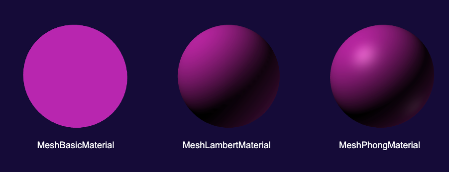
Отсутствие сглаживания MeshLambertMaterial заметно на низко-полигональных геометриях в отличие от MeshPhongMaterial.
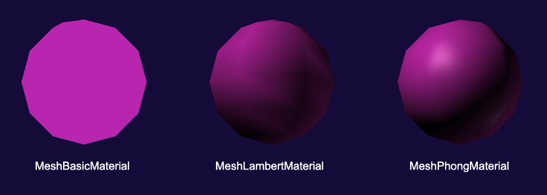
Интенсивность блика MeshPhongMaterial устанавливается
свойством shininess
(0-100). Кроме этого можно задавать цвет блика
с помощью свойства
specular класса Color:
material.specular.set(0xff0000);
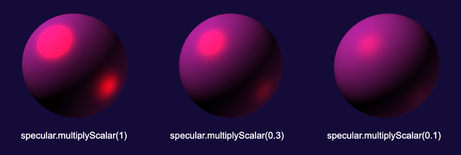
Цвет emissive MeshLambertMaterial
и MeshPhongMaterial задает сплошную
заливку, которая потом суммируется с другими
составляющими (color, тенями, бликами
и отражениями).
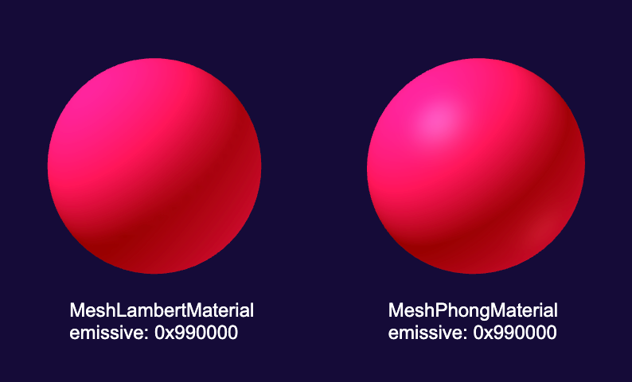
С его помощью можно делать цветные тени на поверхности объектов. Обратите внимание, что тень на поверхности шаров состоит из оттенков красного.
- MeshToonMaterial: похож на MeshPhongMaterial, но вместо расчета затенения берет карту градиента для выбора оттенков. По умолчанию используется карта градиента, яркость которой составляет 70% для первых 70% и 100% после, но вы можете предоставить свою собственную карту градиента.
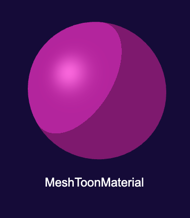
-
MeshPhysicalMaterial и MeshStandardMaterial моделируют физически реалистичные модели отражения — Physically Based Rendering (PBR).
MeshPhysicalMaterial и MeshStandardMaterial используют другие параметры для настройки отражения:
roughness(шероховатость) иmetalness(металичность).Чем больше
roughness(0-1), тем больше рассеяние на поверхности и более мягкие отражения от поверхности, как от теннисного мячика, чем меньше, чем жестче отражения, как от глянца. При 0 поверхность отражает как зеркало строго в одном направлении.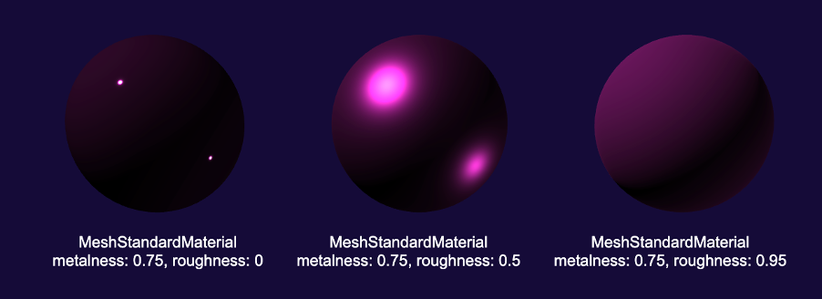
Чем больше
metalness, тем больше материал отражает, как металлическая поверхность. Металические поверхности отражают иначе, чем диэлектрики.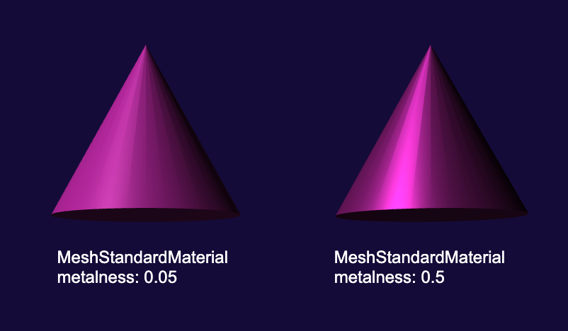
MeshPhysicalMaterial отличается тем, что у него имеется
clearcoatпараметр (0-1) для определения степени применения слоя глянцевого покрытия, иclearCoatRoughness, который указывает, насколько шероховатым является слой глянца. Слой глянца дает дополнительный яркий блик.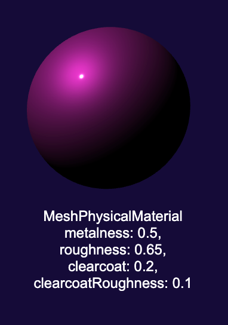
Служебные материалы
Используются как полуфабрикаты для дальнейшего расчета сцены.
-
ShadowMaterial используется для приёма поверхностью теней.
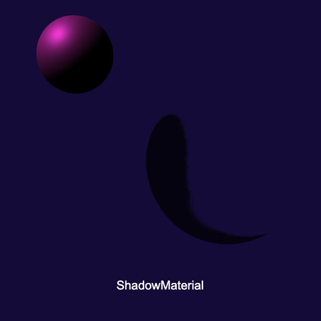
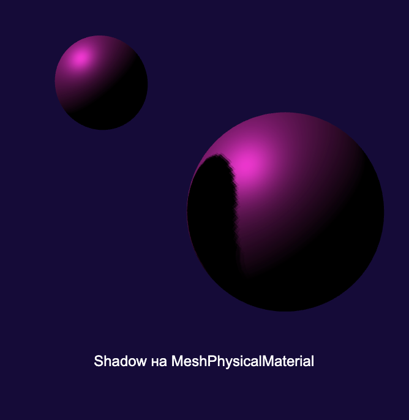
-
MeshDepthMaterial отрисовывает глубину каждого пикселя, где пиксели при отрицательном near камеры равны 0 и при отрицательном far равны 1.
-
MeshNormalMaterial показывает нормали геометрии. Нормали — это направление конкретного треугольника или грани пикселя. MeshNormalMaterial подставляет вектор нормали вместо вектора цвета. Так x становится r (от -1 до 1), y — g, z — b.
Иногда MeshNormalMaterial используют для создания интересных цветовых эффектов, накладывая на поверхности других материалов.
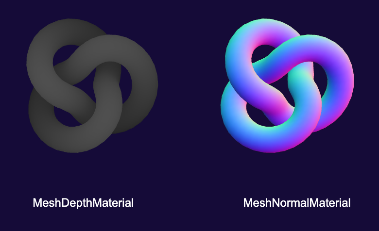